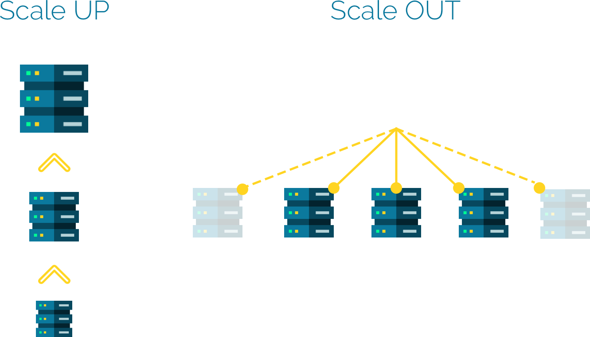

Partie 1 - Introduction au Big Data
Les "Big Data", Pourquoi?
L'être humain, à travers l'humanité, a toujours cherché trois choses : Savoir (qu'est-ce qui s'est passé?), Comprendre (pourquoi cela s'est-il passé?) et Prédire (qu'est-ce que qui se passera?). Plusieurs cultures ont clamé l'omniscience en ayant recours à des subterfuges, tels que les oracles, l'astrologie, le tarot, ou les boules de cristal.
Cela dit, ces moyens ne sont guères satisfaisants à l'esprit méticuleux du scientifique, qui cherche toujours une explication logique et rationnelle à tout évènement, et une justification convainquante à tout comportement. Le scientifique se base sur des faits. Il veut arriver à faire de la magie grâce à la technologie.
Pour arriver à ces fins, le scientifique a besoin de données. L'intérêt de collecter des données et de les exploiter a longtemps été négligé, et a été limité au peu de données, jugées "utiles", qui semblaient suffisantes pour atteindre un objectif immédiat. Cependant, adopter le chemin évident et peu risqué n'aurait jamais permis de réaliser les miracles auxquelles on s'attendait. Il fallait trouver un autre moyen..
Le terme Big Data est apparu peu de temps après l'apparition du terme Web 2.0, qui montre la transition de l'internet d'une ère où l'ajout des données était exclusivement réservé à une élite experte, où le volume des données disponible était petit mais où les données étaient précieuses et pertinentes, vers une ère où tout un chacun était capable d'introduire des connaissances, véridiques ou pas, qui seraient sauvegardées dans une mémoire collective jusqu'à la fin des temps. Ce changement de paradigme a entrainé le besoin d'infrastructures nouvelles, qui seraient capables, non seulement de stocker ces données, mais également d'en extraire de la valeur.
Ces infrastructures auront la capacité de gérer toute la chaîne logistique des données, de la collecte vers l'affichage. Cela semble évident, me direz-vous, car les systèmes classiques sont capables de faire cela. Qui stocke mieux les données qu'une bonne vieille base de données relationnelle? Le problème est que les données dites "Big Data" sont caractérisées par des propriétés telles que, les systèmes classiques de stockage et de traitement auraient du mal à les exploiter à leur juste valeur.
Caractéristiques des Données Massives
Le terme "données massives", ou "Big Data", ne donne à mon avis pas entièrement justice aux données de notre domaine. En effet, il représente une seule caractéristique parmis plusieurs, le Volume, qui, même si elle semble être la plus importante, est loin d'être la plus critique.
En effet, les données massives sont caractérisées par les fameux *V. Il en existe plusieurs (10 jusqu'à ce jour si je ne m'abuse, certains en citent même 42!!!), mais pourraient à mon avis être résumés en trois caractéristiques primordiales, autours de la combinaison desquelles tournent toutes les décisions prises dans ce domaine.
-
Volume
C'est évidemment le V le plus manifeste, qui caractérise le fait que les données ont un volume énorme qui peut atteindre des valeurs de l'ordre de Exa-, Zetta- ou Yottaoctet (allant jusqu'à 2^{80} octets!). Mais ceci n'est pas tout. Un volume énorme, s'il reste constant, est gérable : il suffit de trouver une machine suffisamment puissante pour le sauvegarder. Le problème avec la propriété du volume, c'est qu'il augmente de façon continue, ce qui rend sa gestion beaucoup plus ardue. Une citation bien connue, et qui se re-confirme chaque année, atteste que "Over the last two years alone 90 percent of the data in the world was generated." Il est donc primordial de trouver un moyen de gérer ce volume toujours croissant des données. -
Vélocité
Cette propriété est, à mon avis, la plus problématique des trois, car, couplée avec le volume, elle rend les système actuels obsolètes. En effet, la vélocité est, littéralement, "La vitesse avec laquelle quelque chose se déplace dans une direction particulière". Dans notre cas, la vélocité des données est la responsable directe du volume croissant des données dans le système. Elle est provoquée par une arrivée des données dans le système sous la forme d'un flux constant qui demande à être stocké et traité immédiatement, ainsi que le besoin croissant des utilisateurs d'avoir une représentation récente et fidèle de l'état des données. D'ailleurs, cette propriété a engendré une autre préoccupation des analystes des données, qui est de fournir une introspection en temps réel sur les données, les qualifiant ainsi de "Fast Data". -
Variété
Ce qui distingue vraiment les données massives des données gérées classiquement dans des bases de données opérationnelles, c'est le support des données semi- et non structurées. En effet, les données non structurées sont des données qu'on stocke dans un format qui n'est pas défini à la création, telles que les données textuelles, images ou sons. Les données semi-structurées sont des données qui contiennent une structure, mais une structure qui n'est pas rigide, et dont on ne définit pas les contraintes à l'insertion de la donnée, contrairement aux données structurées (se trouvant typiquement dans des bases de données relationnelles) qui, si elles ne respectent pas la structure définie, sont considérées fausses et ne sont pas autorisées à être enregistrées. On estime que seules 15% des données dans une entreprise sont des données structurées, contre 85% qui ne le sont pas! Dans une optique centrée sur les données, dont le but est de gagner le maximum de vision à partir des données, perdre autant de sources d'information est un vrai problème. Il est donc important que les systèmes Big Data sachent interpréter ces données et en extraire le maximum de valeur.
Toutes les décisions, choix et propriétés prises au niveau des architectures et infrastructures Big Data sont régies par ces trois caractéristiques, ce qui va complètement changer la vision "relationnelle" que tout informaticien qui se respecte a acquis tout au long de ses années d'étude et de travail.
Cela dit, ce ne sont pas les seules propriétés. D'autres V ont vu le jour, mais sans jamais avoir autant d'impact sur l'infrastructre, plutôt dans la façon de définir les processus, la gouvernance et les approches métier à adopter. Nous citons par exemple :
- Véracité : c'est la confiance que nous devons avoir en nos données. Cette propriété est inversement proportionnelle au volume et à la variété : plus nos données sont fiables, moins elles sont diversifiées et volumineuses!
- Valeur : c'est la capacité d'extraire de la valeur métier à partir des données.
- Variabilité : une extension de la variété, qui indique à quel point nos données peuvent avoir des dimensions différentes à partir des sources de données disparates.
- Visualisation : c'est la capacité de nos données à être représentées par les outils de visualisation classiques.
- etc.
Infrastructure Big Data : Besoins
Les caractéristiques des données Big Data citées ci-dessus, entraînent des besoins particuliers en termes d'infrastructure et d'architecture.
Volume
La caractéristique de volume, qui implique que la taille des données augmente de façon régulière, fait qu'on ne peut plus se contenter d'un système centralisé classique. Car dans un système centralisé (donc basé sur une seule machine), augmenter les ressources de stockage au besoin implique ce que nous appelons une scalabilité verticale ou un scale up, qui veut dire une augmentation des capacités du serveur de stockage en rajoutant des processeurs, de la RAM ou des disques.
Cependant, cette solution, bien qu'elle soit intuitive, rapide et ne requiert pas de changement architecturaux conséquents, implique en général un temps d'arrêt pendant l'installation, ainsi qu'une dépense assez conséquente pour faire l'acquisition d'un serveur puissant. De plus, une machine unique atteindra rapidement une limite matérielle, car il vous est impossible d'augmenter ses ressources indéfiniment.
En contrepartie, il est possible de penser que, face à un volume de données toujours en augmentation, il serait plus judicieux de rajouter des machines au besoin, créant ainsi un cluster de machines interconnectées, ou système réparti, dont la taille et la capacité sont virtuellement illimitées. Nous sommes donc face à un autre type de scalabilité : la scalabilité horizontale ou le scale out.

Donc Volume => Scalabilité Horizontale
Vélocité
La vélocité est une propriété qui, couplée au volume, rend la gestion de l'infrastructure un vrai cauchemar. En effet, gérer des données en continuelle arrivée implique qu'il y'a un risque énorme de perte de données, si elles ne sont pas manipulées à temps. C'est pour cette raison qu'un système Big Data se doit d'être continuellement disponible : toute requête de lecture ou d'écriture doit être traitée en un temps raisonnable, et le système doit être continuellement alerte pour saisir toutes les données, sans risquer de les perdre.
Ainsi Vélocité => Disponibilité
Variété
La variété de données implique non seulement que nous sommes en présence de données structurées, semi-structurées et non structurées, mais également que ces données peuvent parvenir de sources différentes, avec des formats différents, et que même à partir d'une même source, ce format peut changer d'un moment à un autre. Dans les systèmes classiques, tout ce qui est variable doit passer par une couche d'homogénéisation qui transformera chaque entrée ou enregistrement dans la forme souhaitée, en remplissant par des valeurs NULL les données manquantes. Rajouter cette couche d'homogénéisation aura un double impact négatif sur notre système : (1) à cause de la vélocité, cette opération risquera de ralentir la collecte et saisie des données entrantes, et (2) on pourra subir une perte de données suite à ces transformations.
C'est pour ces raisons qu'un système Big Data se doit de supporter des types de données changeants, sans pour autant requérir à des subterfuges qui alourdissent ou contournent le système de stockage.
D'où Variété => Flexibilité
Théorème CAP
Les besoins de scalabilité, disponibilité et flexibilité, obligatoires pour avoir un système Big Data en bonne et due forme, se trouvent confrontés à une contrainte de taille... et qu'en est-il de la cohérence (communément appelée aussi consistence, par anglicisme)?
La cohérence représente en effet un must pour les systèmes relationnels classiques, et une base sur laquelle sont prises toutes les décisions conceptuelles et techniques. Elle représente le fait que les données stables doivent respecter toutes les contraintes d'intégrité définies à la création de la base de donnée. Par exemple, si un champ est décrété "Not Null", il doit le rester quelque soit la situation, et à aucun moment une requête ne doit surprendre ce champs avec une valeur nulle, même si c'est juste une valeur intermédiaire. La cohérence est un principe très rigide dans les bases de données relationnelles, et représente le critère de base pour la gestion des transactions : le C de ACID.
Cela dit, dans les systèmes Big Data, nous nous trouvons confrontés à un problème de taille : nous devons être en présence d'une infrastructure répartie et hautement disponible. Or, il existe un théorème appelé CAP pour Consistency / Availability / Partition tolerance, qui stipule que ces trois propriétés (notamment la cohérence, la disponibilité et la tolérance au partitionnement), ne peuvent jamais avoir lieu en même temps. Seules deux d'entre elles peuvent être respectées à la fois.

Essayons d'expliquer pourquoi.
Un système réparti est dit cohérent si tous ses noeuds voient les mêmes données en même temps. C'est à dire que, si nous réalisons une opération de lecture sur un système consistant, il devrait toujours retourner la valeur la plus récente qui ait été écrite, quel que soit l'endroit à partir duquel la lecture est effectuée. Ainsi, si une donnée est modifiée sur un noeud particulier, pour conserver la cohérence demandée, aucune opération de lecture ne doit être permise avant d'avoir mis à jour toutes les répliques (copies) de cette données. Or, les différents noeuds d'un cluster sont en général distants, parfois même géographiquement, il est donc nécessaire d'attendre que la propagation de la modification se fasse sur le réseau, pour effectuer n'importe quelle opération, même une lecture. Ceci va rendre nos données indisponibles à la lecture pendant tout le temps que durera l'opération de synchronisation, qui est un temps incertain puisque... réseau. Assurer donc une cohérence forte dans un système distribué est en contradiction avec le besoin de disponibilité du système et des données. D'ailleurs, c'est ce que font les bases de données relationnelles réparties, qui conservent les propriétés ACID tout en distribuant les données, mais qui souffrent d'un manque notoire de performance.
Les systèmes Big Data, subissant les contraintes des V précédemment cités, doivent donc faire un choix. Or ce choix est loin d'être facile : qui voudra acheter un système qui prône haut et fort qu'il est incohérent ? L'idée serait donc de partir sur le principe de cohérence éventuelle ou parfois de cohérence ajustable. Ainsi, un système Big Data est un système principalement disponible, fondamentalement réparti, et qui assure une cohérence éventuelle au bout d'un temps généralement négligeable, avec la possibilité de configurer les niveau de cohérence parfois même dynamiquement.
Les experts les appellent donc les systèmes BASE (admirez le jeux de mot.. ACID, BASE 😎):
- Basically Available
- Soft-state
- Eventual consistency
La propriété de Soft State ou d'état "mou" veut dire que l'état du système peut changer dans le temps, même sans qu'il y ait une nouvelle entrée, à cause du principe de cohérence éventuelle expliqué précédemment.
Maintenant que vous êtes plus familiarisés avec les caractéristiques d'un système Big Data, listons quelques principes, appelés ici MOTTOS, qui vont régir nos futures décisions dans ce domaine.
Principes de base du Domaine des Big Data
Il est important, avant d'entamer n'importe quel travail sur les systèmes Big Data, de considérer certains principes, qui sont parfois en entière contradiction avec les principes classiques de développement d'application. Ce n'est pas si étonnant : le domaine des Big Data n'est pas censé prendre la place des domaines relationnel et décisionnel, mais plutôt les enrichir et les agrémenter.
MOTTO 1 : Stocker d'abord, réfléchir ensuite
À cause de la vélocité, il est important de considérer qu'il nous sera parfois difficile, voire impossible, de nettoyer les données ou de faire un traitement quelconque dessus, avant de les stocker. Cela risque dans bien des cas de nous faire perdre des données, le cauchemar de tout scientifique des données!
Nous devons donc envisager la possibilité de définir des systèmes de stockage qui contiennent des données non nettoyées, en vrac (appelées raw data), pour ensuite lancer des traitements dessus.. l'horreur pour un gestionnaire de bases des données! 😱
Bien entendu, ces "bases" ne sont pas conçues pour être directement exploitées par des applications externes, mais plutôt pour conserver le plus longtemps possibles les données brutes, sans perte, qui pourraient eventuellement être réutilisées pour d'autres fins.
MOTTO 2 : Absolument TOUTES les données sont importantes!
D'où l'intérêt du MOTTO 1. Il nous est parfois difficile, au tout début de la conception des systèmes Big Data, de cerner toutes les possibilités offertes par ces systèmes et par les données que nous avons à notre disposition. Nous sommes donc en général tentés de supprimer les données dont nous n'avons pas besoin une fois extraite l'information immédiatement utile. Cela dit, grâce à l'accessibilité des systèmes de stockage magnétiques et leur prix de plus en plus bas, nous considérons qu'il est largement plus bénéfique de stocker des données qu'on n'utilisera peut-être jamais, plutôt que de gagner de la place et perdre un potentiel pouvoir concurrentiel.
MOTTO 3 : Ce sont les données qui pilotent le traitement
Dans un système opérationnel classique, ainsi que dans la plupart des systèmes décisionnels, ce sont les besoins métier qui prévaloient : le responsable métier commence par définir les besoins (ou les KPIs : Key Performance Indicators dans le cas d'un système décisionnel), puis le responsable technique conçoit les structures de données pour répondre à ces besoins.
Par essence, un système Big Data fonctionne différemment : les données sont collectées tout d'abord à partir de toutes les sources possibles; des traitements de fouille et d'exploration de ces données sont lancés ensuite, pour extraire de la valeur à partir de ces données. L'objectif est toujours le même : chercher l'effet WOW!
D'où l'intérêt de ce MOTTO : définir le traitement à réaliser dépend des données que nous avons réussi à collecter, et pas le contraire. Cela implique donc l'utilisation d'autres types de systèmes de traitement et d'algorithmes d'analyse.
MOTTO 4 : Co-localisation des données et du traitement
Un système classique à plusieurs couches, tel que le système trois tiers par exemple, se base sur le principe de séparation des données et du traitement. On trouve en général des données sur un serveur de bases de données séparé, et les traitement complexes sur un serveur d'application qui se charge de l'aggrégation et de l'affichage de ces données. Ceci est agrémenté d'un langage de requêtage déclaratif (typiquement SQL) pour réaliser des opérations de filtrage, parfois assez lourdes et complexes, au niveau de la base de données.
Cela dit, dans un contexte Big Data, le volume des données peut s'avérer assez conséquent, trop même pour envisager de le déplacer à chaque fois vers un autre système pour en extraire une vraie valeur. De plus, compter sur un langage comme SQL pour diminuer le volume ou faire de simples agrégations au niveau de la base de données pourra la rendre indisponible pendant un moment (car n'oublions pas que nous parlons d'un système réparti), ce qui va à l'encontre du principe de vélocité, qui exige une disponibilité à toute épreuve du système de stockage.
C'est pour cette raison que, pour réaliser les traitements voulus en un temps raisonnable et sans avoir à trimballer les données sur le réseau, il est question dans les systèmes Big Data de déplacer le traitement vers les données massives, au lieu de déplacer les données vers le traitement.
MOTTO 5 : La redondance, c'est bien
Dans les bases de données relationnelles, le plus grand ennemi à combattre dans la conception de la structure de données est la redondance, et ce pour deux raisons. La première, évidente, est le gain d'espace : notre espace de stockage est précieux, et nous devons éviter de le gaspiller sans raison précise. La deuxième est un besoin de cohérence : si nous dupliquons une même information à plusieurs endroits dans la base, nous devrons par la suite faire attention, parfois par des mécanismes compliqués et coûteux, à ce que cette information soit mise à jour instantanément sur la totalité de ses copies.
Ce besoin d'éviter la redondance a créé la nécessité d'utiliser plusieurs techniques, telles que les jointures et clefs étrangères, et entraîne parfois la création d'un très grand nombre de tables. Ceci rajoute une complexité pour le requêtage, et une lourdeur d'exécution des tâches sur la base.
Un système Big Data qui, non seulement est caractérisé par un gros volume de données, mais également une grande vélocité, et qui doit donc être immédiatement disponible, ne peut pas se permettre de gaspiller ses ressources en requêtes inutiles. On tolère donc à un certain point les risques dus à la redondance, pour gagner en disponibilité, primordiale dans ce type de systèmes.
D'autre part, un système Big Data est un système réparti par excellence, et dans un système réparti, il est primordial d'assurer une bonne tolérance aux fautes en créant des répliques des données, disséminées partout sur le cluster. Ces répliques assurent qu'aucune machine n'est complètement indispensable, et diminue le risque d'indisponibilité des données. Un autre signe de redondance.
MOTTO 6 : Vive le Polyglottisme!
Être polyglotte, c'est être capable de parler plusieurs langues. Et les systèmes Big Data encouragent le polyglottisme. En effet, ce sont des systèmes complexes qui impliquent en général plusieurs traitements et plusieurs types de données différentes (données brutes, données nettoyées, données traitées), ce qui fait qu'il existe deux principes importants à encourager :
- Polyglot Programming : Une application peut comporter plusieurs langages et paradigmes de programmation, chacun assurant un besoin particulier, de façon à profiter des avantages de chacun à sa juste valeur.
- Polyglot Persistence : Dans une même application, il est possible d'utiliser plusieurs systèmes de stockage différents (relationnels, NOSQL, systèmes de fichiers, etc.).
Grâce à ces deux principes, on pourra créer des applications complexes mais complètes, qui permettent d'assurer tous les besoins en terme de stockage et de traitement.
Technologies et Paradigmes
Les opérations à réaliser sur les systèmes Big Data consistent principalement en :
-
Ingestion des données : représente les phases de collecte et d'importation des données pour être stockées ou traitées à la volée. Cela peut se faire en "temps réel", c'est à dire que les données sont importées au moment où elles sont émises par leur source, ou bien "par lots", ce qui veut dire que les données sont importées par portions à intervalles régulier.
Exemples de technologies
Apache Kafka, Amazon Kinesis, Apache Flume, Sqoop, etc. -
Stockage des données : Les systèmes de stockage de données respectant les propriétés le Big Data se distinguent principalement en systèmes de fichiers distribués, tel que Hadoop HDFS ou Google GFS, ou bases de données NOSQL, tel que MongoDB, Cassandra, Redis ou Neo4J.
-
Traitement des données : Plusieurs types de traitement de données sont possibles, nous citons :
-
Traitement par lot (Batch Processing) : c'est le traitement des données au repos (data at rest) qui se fait sur l'ensemble des données stockées, sans avoir besoin d'une interaction avec l'utilisateur. Le traitement par lot est adapté principalement aux opérations ayant lieu à la fin d'un cycle, permettant d'avoir une vision globale sur la totalité des données, par exemple pour avoir un rapport global ou une analyse mensuelle. Les opérations de traitement par lots sont en général lancées à des périodes régulières, car elles sont connues pour avoir une grande latence (temps total de traitement).
Exemples de technologies
Hadoop Map Reduce et Spark Batch. -
Traitement en Streaming (Stream Processing) : c'est le traitement des données en transit (data in motion), ou en d'autres termes, le traitement des données pendant qu'elles sont produites ou reçues. Les données étant en général créées en tant que flux continu (évènements de capteurs, activité des utilisateurs sur un site web, flux vidéo, etc.), elles sont capturées comme une série d'évènements continus dans le temps. Avant la création des traitements en streaming, ces données étaient stockées dans une base de données, un système de fichier ou tout autre forme de stockage en masse. Les applications appelleront ensuite les données au besoin. Grâce à ce nouveau paradigme, les données peuvent maintenant être traitées à la volée, ce qui permet à la couche applicative d'être toujours sur écoute et à jour.
Exemples de technologies
Apache Flink et Apache Storm. -
Traitement par Micro-Lot (Micro-Batch Processing) : c'est la pratique de collecter les données en petits groupes (appelés des micro-lots ou des micro-batchs) pour les traiter. Contrairement au traditionnel traitement par lot, cette variante fait en sorte que le traitement des données soit plus fréquent, et que les résultats soient produits avec une latence beaucoup plus petite. Les données sont collectées par intervalles selon un seuil prédéfini, limité par un temps (par exemple toutes les secondes), ou par un nombre (tous les 20 éléments). Ce traitement est en général une alternative au traitement en streaming, où les données sont traitées à la volée, mais risquent d'être perdues si le temps de traitement est supérieur à la fréquence de génération des données. Le micro-batching permet, par contraste, de sauvegarder les données dans un buffer, ralentissant ainsi le flux généré. D'autre part, les données étant traitées par micro-lots, il est possible d'avoir une visibilité sur ce petit lot de données, contrairement au traitement en streaming qui n'a de visibilité que sur la dernière donnée générée, à moins de procéder à des mécanismes parfois coûteux. En contrepartie, le traitement en micro-batch donne des résultats moins récents que le "vrai" streaming, et s'exécute sous forme de bursts réguliers, qui peuvent parfois être gênants pour le système sous-jacent.
Exemples de technologies
Spark Streaming et Logstash. -
Traitement Interactif (Interactive Processing) : Dans les systèmes Big Data, la notion de transaction n'est plus exactement la même que pour les systèmes classiques: finies les sacro-saintes propriétés ACID dont le premier objectif est d'avoir des données correctes et cohérentes, et bonjour les propriétés BASE, qui favorisent un accès moins rigide aux données. On parle donc rarement de traitement transactionnel en Big Data, mais de traitements plutôt interactifs : une requête est envoyée par le client, traitée immédiatement par le système qui renverra un résultat dans un temps raisonnable. On parle alors d'interaction entre l'utilisateur et le système. Les traitements en batch et en streaming ne sont pas censés communiquer avec un utilisateur de l'autre côté. En général, les résultats de ces traitements sont enregistrés dans un système de stockage, qui sera, lui, par la suite interrogé par l'utilisateur. Le traitement interactif est donc le résultat d'une requête de l'utilisateur, faite en général sur une base de données (relationnelle ou NOSQL).
Exemples de technologies
Apache Drill, Cloudera Impala ou Apache Zeppelin.
-